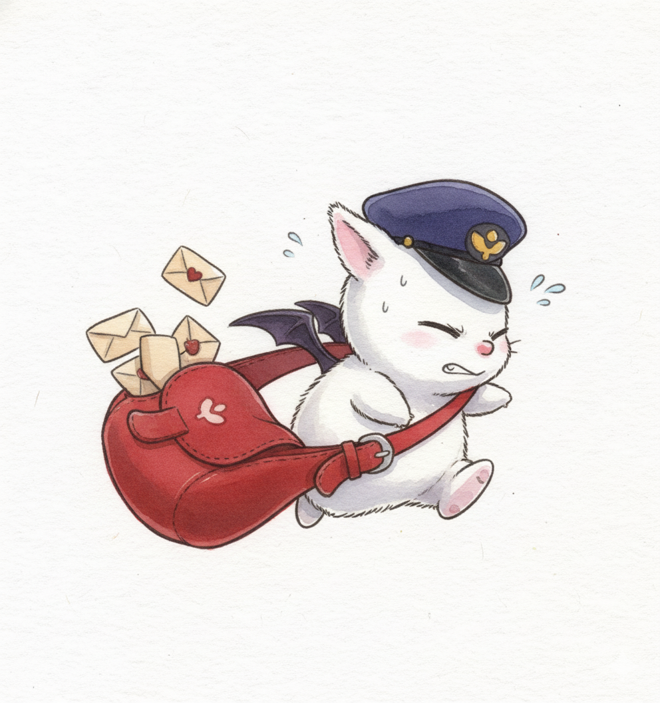
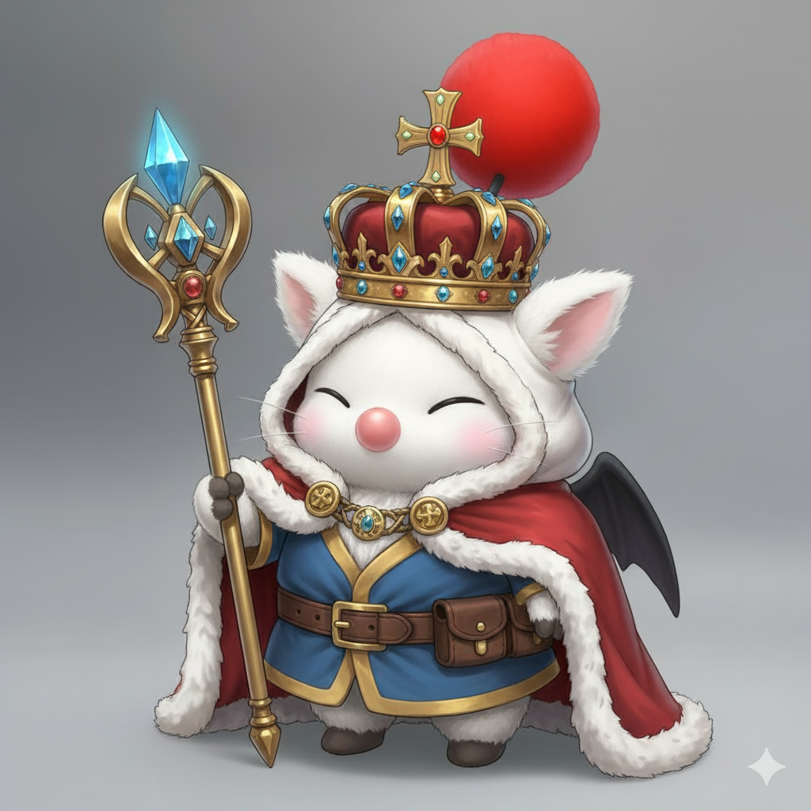

Moogle Culture and Society
Roles in Their World
Moogles play a wide variety of important roles across the realms. Many serve as messengers, delivering letters, items, and even magical artifacts with remarkable reliability. Others work as engineers and inventors, repairing airships, crafting tools, or maintaining complex machinery. Some Moogles take on roles as healers, guides, librarians, explorers, or helpers, supporting both adventurers and everyday community life. No matter the task, Moogles approach their work with enthusiasm, creativity, and a strong sense of duty.

Customs and Communication
Moogle culture thrives on community, kindness, and joyful expression. Their most iconic phrase, “Kupo!”, is used as a greeting, an exclamation, or a punctuation of excitement. Moogles also communicate through subtle wing flicks, pom-pom movements, and expressive gestures. They value cooperation and gather frequently in small villages or family groups where storytelling, crafting, and shared meals strengthen their bonds. Their customs reflect harmony and teamwork, making Moogle communities some of the most welcoming anywhere.
Notable Moogles in History
Throughout history, several Moogles have earned recognition for their bravery, intellect, or leadership. Some have served as trusted advisors to heroes, offering wisdom at critical moments. Others have been master craftsmen, building legendary machines or magical items. A few adventurous Moogles became famous explorers, mapping unknown lands and forging new paths for their kind. Among the most iconic is Good King Moggle Mog XII, celebrated for his charismatic leadership and for the legendary tale in which he lowered a rope from the heavens where they used to live, allowing Moogles to safely descend to the mortal realm—sacrificing his own chance to follow. These standout individuals show that even the smallest creatures can accomplish incredible feats and inspire generations of Moogles to dream boldly.
